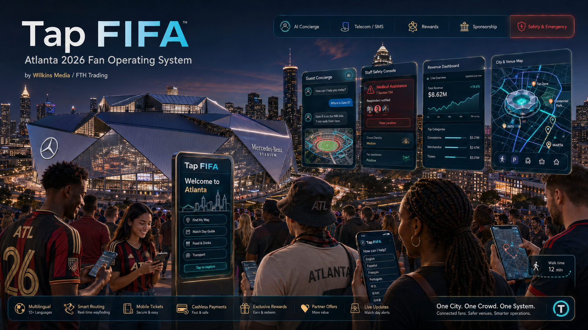

Everything built — applications, shared packages, data models, API modules, and frontend pages — in one production-grade pnpm + Turborepo monorepo.

Four Next.js 15 frontend surfaces and one NestJS API, all orchestrated by Turborepo with shared TypeScript packages.
Next.js 15 PWA for fans. Multilingual concierge, venue map, cultural food discovery, rewards, emergency mode, sponsor placements, and tap interface.
Next.js 15 admin panel for the host committee. Venue POIs, event management, translation approvals, and operational dashboard.
Next.js 15 operations console. Translation-assisted support queues, rapid escalation, and emergency incident management.
Next.js 15 executive dashboard. Campaign performance, telecom analytics, revenue views by language and intent, demo simulation.
12 domain modules, Prisma 6 ORM, PostgreSQL 16 + pgvector, Redis 7 + BullMQ. REST endpoints with Swagger docs, rate limiting, audit logging.
Every package is consumed by all five apps via pnpm workspace references. Types, auth, translations, campaigns, analytics, emergency, and more — all shared.
Prisma 6 schema with 39 models. Generated client, TypeScript types, and database migrations.
JWT authentication, role-based access control, session management for staff, admin, and API consumers.
Multilingual translation engine. t() resolver, RTL detection, 40+ language fallback merging.
Shared React component library. Brand-themed cards, buttons, layout primitives, design tokens.
Shared utilities: date formatting, currency helpers, validation, and common business logic.
Sponsor campaign engine. 3-tier monetization, impression/click/conversion tracking, cultural matching.
MCP tool registry, intent classification, RAG retrieval with pgvector, cultural ranking, sponsor injection.
Event tracking, revenue attribution, language breakdown, campaign performance, funnel metrics.
Deterministic emergency system. 10 approved phrases, safety overrides, incident tracking.
Venue and city mapping. POI management, geofences, wayfinding logic, map data adapters.
Shared configuration: environment variables, feature flags, brand packs, deployment settings.
PostgreSQL 16 with pgvector. Every model designed, migrated, and seeded with real Atlanta World Cup data.
Each module is a self-contained domain with its own controllers, services, and DTOs. Port 4000, Swagger docs, rate limiting, audit logging.
MCP tool router, intent classification, RAG retrieval, cultural ranking, sponsor injection orchestration.
Event tracking, revenue attribution, language breakdown, campaign performance, funnel metrics.
JWT authentication, role-based access, session management, and token refresh flows.
Sponsor campaign CRUD, tier management (Smart Placement, Cultural Concierge, Reward Engine), targeting rules.
Conversation management, message storage, and thread routing for guest-to-system interactions.
Guest concierge endpoint — the main entry point for multilingual, intent-driven fan assistance.
Emergency phrase lookup, incident creation, escalation triggers, safety-first deterministic responses.
Event and event-day management, match schedule, and host committee configuration.
API health checks, database connectivity, Redis status, and system readiness probes.
Venue POI management, city service listings, restaurant data, and geofence operations.
Telnyx SMS/Voice webhooks, inbound message processing, language detection, outbound delivery.
Translation entry management, phrase approvals, language coverage tracking, quality control.
Every layer has been chosen for enterprise readiness, type safety, and developer velocity.
App Router, React Server Components. Four independent frontend builds sharing common packages.
Enterprise TypeScript framework with modular architecture, dependency injection, guards, pipes, interceptors.
Type-safe ORM with 39 models. Auto-generated client, migrations, and seeding.
Primary database with vector similarity search for RAG retrieval and semantic intent matching.
Caching, session storage, rate limiting, and background job processing for async operations.
Monorepo orchestration. Parallel builds, dependency caching, workspace package linking.
Full stack containerization: PostgreSQL, Redis, API, and all four frontend surfaces.
Telecom integration: SMS/MMS inbound and outbound, voice webhooks, and number management.
Every layer of the Tap FIFA infrastructure runs on free or open-source tools — from hosting and maps to local AI inference and image generation.
Static marketing site served from docs/. Zero cost, automatic deploys on push to main.
Serverless API proxy for Deepgram voice, edge AI routing, and rate-limited sponsor endpoints.
Interactive venue maps with custom SVG markers. Zero licensing cost for map tiles and routing.
Local AI image generation pipeline. Reproducible ComfyUI workflows produce all marketing assets.
Local LLM inference on RTX 5090. Powers sponsor copy generation, translation review, and RAG search.
Primary database with vector similarity search for RAG retrieval, intent matching, and analytics.
Caching, session storage, rate limiting, and background job processing for async operations.
Monorepo orchestration with parallel builds, dependency caching, and workspace package linking.
The codebase is structured to migrate forward without rewrites — Next.js App Router already in use, Tailwind-compatible class naming, shadcn/ui-ready component structure, Lucide-compatible SVG icon system.